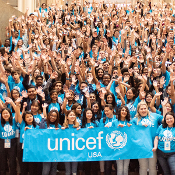
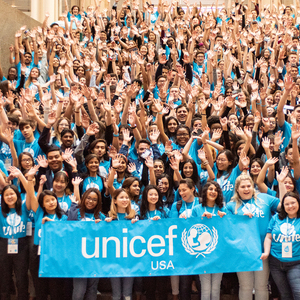
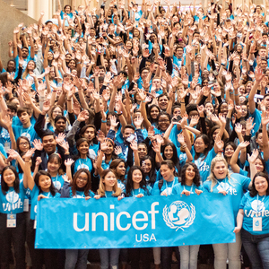

Jenny Xiao
Currently, I work as an administrative assistant at an educational institution for students who are in need of extra homework help as well as transitioning to college. I pick up any phone calls from parents to students who are interested in our program, to needing assistance of any kind. I am the middleman between educational counselors and students who need to schedule a meeting, or if parents run into any issues in regards to the program. I have been working with this program for about three months, during the COVID-19 period. Although the students are not physically present due to the current situation, I communicate with our clients electronically. I also provide any information needed and send out emails every week to update the students on their class links and curriculum.
During the first week of my job, I helped move offices from the old location to the new one, due to the pandemic. Our company had a budget cut on wages as well. I only worked with one other colleague due to the limited workforce during the coronavirus period. From there, I spent a week by myself in the old office location and helped direct the movers on what needs to be relocated despite the unfamiliar environment and my limited knowledge. This was my first real job. After the move was successful, I assisted in contacting companies to replace the sign at the new office, work on our internet, as well as water services. Through the experience of just one week, I gained an overwhelming amount of knowledge and experience on how to deal with more “uncomfortable” situations.
Now, I work at the new office with very limited staff. However, I have found to enjoy working with adults and students - people of all ages. Through emails and phone calls, I have gained tons of experience and learned a lot as well. This program also allows me to better my communication skills with strangers, and improve my Chinese. Though born American-Chinese, my Chinese skills were not the worst, but not the best either. With this job, I am able to further improve my language skills, which allows me to appreciate my culture as well. This can be extremely helpful towards my future career, if I were to work overseas, or with a more bilingual company. Speaking to parents who understand little to no English plants me in a more stressful environment, and I am able to work under pressure. Working alongside a more experienced administration also helped me improve my computer knowledge. I am significantly better at office applications, and what programs I need to utilize to organize hundreds of students under different branches. Working as an administrative assistant in an office during the coronavirus pandemic for three months as well as the upcoming months truly helped me grow in my skills and character. With that, I hope to help more clients, and lead them towards a successful future with my own knowledge and experience as well as bettering myself.
Experience
Administrative Assistant
• Take any phonecalls coming into the office
• Email out class links and curriculum to students
• Experience in any office application
Teacher's Assistant (Volunteer)
• Tutored English, Science, Mathematics
• Communicated with staff in the institution as well as parents
Activities Director
• Organized club activities alongside the cabinet staff
• Cordinated volunteer activities with different organizations
Education
UC Riverside
Portfolio
 

